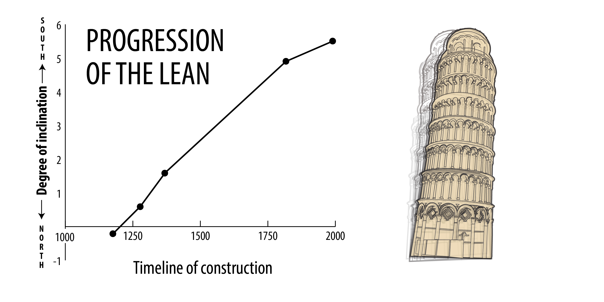
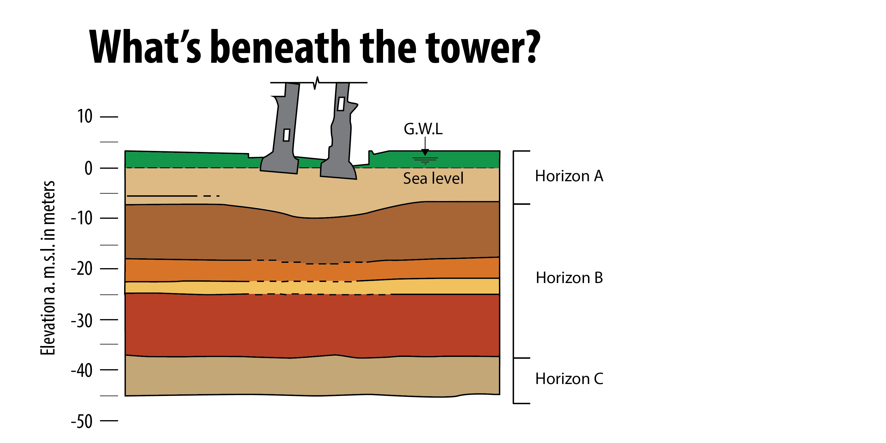

Torre Pendente di Pisa


Citta italiane
Click the circles to discover some of Italy's major cities.
Facts about Italy:
Population: 58,742,000
Capital: Rome
Area: 301,333 square kilometers
Language: Italian, German, French, Slovene
Religion: Roman Catholic
Currency: Euro
Pisa
Click the circles to discover major monuments in Pisa.
+
+
+
- 
- 
+
Subsoil profile
Click the circles to discover what the different layers are made of.
The water table in horizon A is 1 to 2 m below the ground. Pumping form the loswer sand (in horizon C) has create downward seepage from horizon A. The average settlement of the Tower is approximately 3 m.